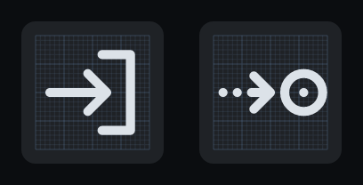
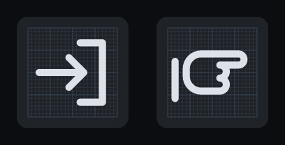
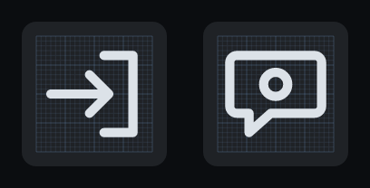

YAAT-569 · part C · coordination · Point out glyph
Three glyphs for Point out
Point out has no strip glyph today; Initiate handoff draws a sector bracket with an arrow entering it (QuickCommandGlyphs.cs:181). Each candidate below is a path in the grammar QuickCommandGlyphs uses: one SVG path on the 24 × 24 view box, stroked 1.9 with round caps and joins, in the scope grey #DCE2E8 (ScopeAndSim(...)). A glyph record carries no dash pattern, so any dashed look is drawn as separate segments in the path, as Expect approach does.
Every image is a resvg render of the paths at the sizes QuickCommandStrip.cs uses: a 40 px button, the glyph at 32 px (CellGlyphSize), the submenu notch #9AA3AD, and a 22 px glyph in a menu row.
There is no light theme. The client runs dark only (App.axaml:5, RequestedThemeVariant="Dark"), and the strip's colours are fixed in code rather than theme resources: the well #1F2226, under the pointer #2C3036, pressed #16181B, and latched while its flyout is open #24406A (QuickCommandStrip.cs:79–83). The renders show those three states and the dark Fluent menu surface instead of a light variant.
ADotted arrow to a target (the dashed draft, made shippable)
1x, real size. Rows: Track, Initiate handoff, Point out, Squawk at rest; Point out under the pointer; Point out latched. Below: the 22 px menu rows, Initiate handoff over Point out.

4x, with the 24-unit grid: Initiate handoff, then A.
Depicts
A dotted pointer that stops short of a radar target: drawing another controller's attention to the target without moving it anywhere. The draft's stroke-dasharray becomes two dots in the path; the arrow stops short of the ring so the two never touch, and the ring gets a centre dot.
Worst case
At 22 px the two dots nearly vanish and it reads as an arrow into a circle: the violet Follow (chevron to a circle) and the blue Direct to and Join radial share that shape, and the teal Push back to is the same idea turned down.
1x, real size. Rows: Track, Initiate handoff, Point out, Squawk at rest; Point out under the pointer; Point out latched. Below: the 22 px menu rows.

4x, with the 24-unit grid: Initiate handoff, then B.
Depicts
A hand pointing right, the index finger out and two fingers curled, a cuff at the wrist: the literal "point out". It shares no stroke with any glyph in the set.
Worst case
The only figurative glyph in a set of diagrams, and at 22 px the two curled fingers merge into a blob, leaving a "finger gun" or a generic select-pointer; nothing in it says another sector or a target.
1x, real size. Rows: Track, Initiate handoff, Point out, Squawk at rest; Point out under the pointer; Point out latched. Below: the 22 px menu rows.

4x, with the 24-unit grid: Initiate handoff, then C.
Depicts
A speech bubble with a target in it: telling another controller about the target, the coordination a point out is, with nothing moving.
Worst case
It sits beside Squawk, the only other boxed glyph in the scope set, and a bubble reads as "talk to the pilot" as readily as "talk to a controller": a later Contact or frequency-change glyph could not use the bubble.
Against the rest of the set
Top: A, B and C as strip buttons. Under them, real size and in their family colours, the glyphs each could be mistaken for: the scope set (Track, Initiate handoff, Squawk, Assume, Assume and track, Release held, Check release window, Warp), then Direct to, Join radial, Follow, Push back to, Taxi to runway, Report traffic in sight and Cleared visual.